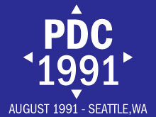
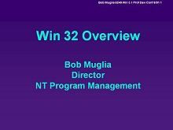
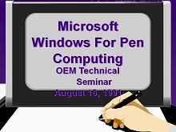

Event - PDC 1991
Event - PDC 1991
PDC 1991 can be considered the very first PDC and it took place in Seattle. There is no existing video of the event, but we do have three PowerPoint decks that were presented by Steve Ballmer, Jim Dun…
Steve Ballmer - Microsoft System Strategy
Bob Muglia - Win 32 Overview
Jim Dunnigan - Microsoft Windows for Pen Computing